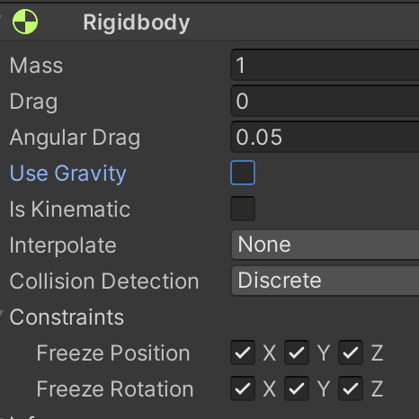

次はバネの動きを Unity を使って再現してみましょう。
演習を行う前に新しいシーンを作り、天井と球を作成します。
なおバネを繋ぐためにはバネの両端にあるゲームオブジェクト両方に Rigidbody をアタッチする必要があります。
こちらのテキストに従ってシーンを新規作成をし、シーン名を「Spring Scene」にする。背景色は任意で構わない(以下の例では見やすいように黒にしています)
ヒエラルキー右クリック → 3D Object → Cube で箱を新規作成し、名前を「TENJYO」、Position を (0,6,0)にする
TENJYO に Rigidbody コンポーネントをアタッチする
ヒエラルキー右クリック → 3D Object → Sphere で球を新規作成し、名前を「TAMA」、Position を (0,0,0)にする
TAMA に Rigidbody をアタッチする
ただこのままでは TENJYO にも重力がかかっているので TENJYO も落ちます。
そこで以下の手順で TENJYO を空間に固定して動かないようにしてあげましょう。
TENJYO のインスペクタを表示して Rigid Body の Use Gravity のチェックを外す (すると重力がかからなくなります)
Constraints → Freeze Position の x,y,z にチェックを入れる(すると位置がロックされます)
Constraints → Freeze Rotation の x,y,z にチェックを入れる(すると回転しなくなります)。
以上の設定を行なうと図1の様な設定状態になります。
図1. TENJYO を動かないようにする

次にバネの設定をします。
なおバネの機能をゲームオブジェクトに与えるコンポーネントは Spring Joint と呼ばれます。
まず以下の手順で TENJYO と HAKO をバネで繋ぎます
TAMA のインスペクタを開いて Add Component ボタンをおす
Physics → Spring Joint で Spring Joint コンポーネントをアタッチする
ヒエラルキーにある TENJYO をドラッグして Spring Joint の Connected Body の右にある None と書いてあるセルにドロップする
None の表示が TENJYO に変ったことを確認する(図2参照)
なお「バネは透明で目では見えません」ので、何も表示されなくても慌てなくて良いです。
次にバネとダンパーの強さなどの設定をします。
ダンパーとは乗用車にもついているバネの振動を抑える装置のことでショックアブソーバとも呼ばれます。
Spring Joint の Auto Configure Connected Anchor のチェックを外す (バネの長さの自動調整機能を OFF にします)
Spring を 10 にする (これがバネの強さです)
Dumper を 1 にする (これがダンパーの強さです)
ここまでの Spring Joint の設定は以下の図2となります。
図2. Spring Joint の設定

ではこれから 2 つほど実験をしてみましょう。
では実行ボタンを押して下さい。
すると TAMA が落ち始め、しばらくすると振動して、だいたい -1 メートルの辺りで静止すると思います(TAMA のインスペクタを開いて Position の Y 値を見て下さい)。
では次に TAMA の重さを変えたらどうなるか見てみましょう。
実行状態のまま TAMA のインスペクタ の Rigid Body の Mass(重さ、単位は kg) を 1 kg から 2 kg に変更して下さい。
するとだいたい -2 メートルの辺りで静止します。
同様に 3 kg にすると -3 メートル辺りまで落ちる事が分かります。
この様に、重さに比例してバネの長さが伸びる事が分かりました。
では次に TAMA を振動させてみましょう。
実行を停止し、 TAMA の重さが 1 kg に戻っていることを確認する (戻ってない時は Mass に 1 を入れる)
重力がかかっていると挙動が分かりにくいので TAMA の Rigid Body の Use Gravity のチェックを外す
TAMA の Position の Y の値を 4 にする ( TAMA を押してバネを縮めている状態)
では実行ボタンを押してみましょう。
すると HAKO が振動を始め、やがて 0 メートルの位置で静止します。
なお実行したまま Y の値を 4 に戻すとまた振動し始めますので、Spring や Dumper や Mass の値を色々変更してどの様な動きになるか試してみましょう。
ここから先は少し難しい話なので分からなければ飛ばしても結構です。
ただし Unity の物理演算機能を使いこなすためには大事な知識ですので興味のある人は是非トライして下さい。
まず最初に示した例 1 はフックの法則を再現しています。
フックの法則とは、$F$ をバネにかかる力、$k$ をバネ定数、$y$ を自然長から伸び縮みした長さとしたとき
\[
F = k \cdot y
\]
となる法則です。
もし $F$ として重力を考えると、$m$ を物体の重さ、 $g$ を重力加速度としたとき
\[ m \cdot g = k \cdot y \]なので、これを変形して
\[ y = \frac{m \cdot g}{k} \]が成り立ちます。
さて Unity では
Spring ≒ $k$ (バネ定数)
となります(完全イコールでないのは例のごとく計算誤差があるためです)。
例 1 では $m$ = mass、 $g$ = 9.81、Spring = 10 としていたので、
重さ 1 kg → 最初の位置から 約 1 メートル下がる
重さ 2 kg → 最初の位置から 約 2 メートル下がる
重さ 3 kg → 最初の位置から 約 3 メートル下がる
という結果になりました。
次に例 2 ではダンパーをバネに加えた時の減衰振動を再現しています。
$k$ をバネ定数、$c$ をダンパーの減衰係数(どれだけ振動を抑えるかを決めるパラメータ)、 $m$ を物体の重さ(kg)とします。
これから減衰率(振動が小さくなる速さ) $r$ と 固有角周波数(ダンパーが付いてない時の振動の速さ) $w_0$ を以下のように求めます。
ここでもし $w_0^2 - r^2 > 0$ つまり $2 \cdot \sqrt{ m \cdot k} > c $ ならば、時刻 t 秒時点における物体の位置 $y(t)$ は以下の式で求まります。
\[ y(t) = y(0) \cdot {\rm e}^{-r\cdot t} \left \{ \cos (w_d \cdot t) + \frac{r}{w_d}\cdot \sin (w_d\cdot t) \right \} \]ここで $y(0)$ は初期位置で、$w_d = \sqrt{ w_0^2 - r^2}$ です。
※ この式を求めるためには微分方程式を解く必要があって長くなるので今回は省略します。気になる人は調べてみましょう。
さて Unity では
Spring ≒ $k$ (バネ定数)
Dumper ≒ $c$ (減衰係数)
Mass ≒ $m$ [kg]
という関係になります。
よって例 2 では Spring = 10、Dumper = 1, mass = 1、$y(0) = 4$ としてたので、理論的には次の様な式となります。
この理論値と Unity 上で実際に測定した値をグラフにすると図3の通りになります。
縦軸が $y(t)$、横軸が $t$ 秒です。
誤差はありますが、だいたい理論通りに減衰振動していることが分かります。
図3. 理論値と実際の値

なお Dumper = 0 にすれば理論的にはずっと振動しているはずなのですが、Unity の場合はいずれ静止します。
ちゃんと調べてはいませんが、どうやら Unity では Dumper の値が現実世界の減衰係数よりも少し大きめに設定されているみたいです。